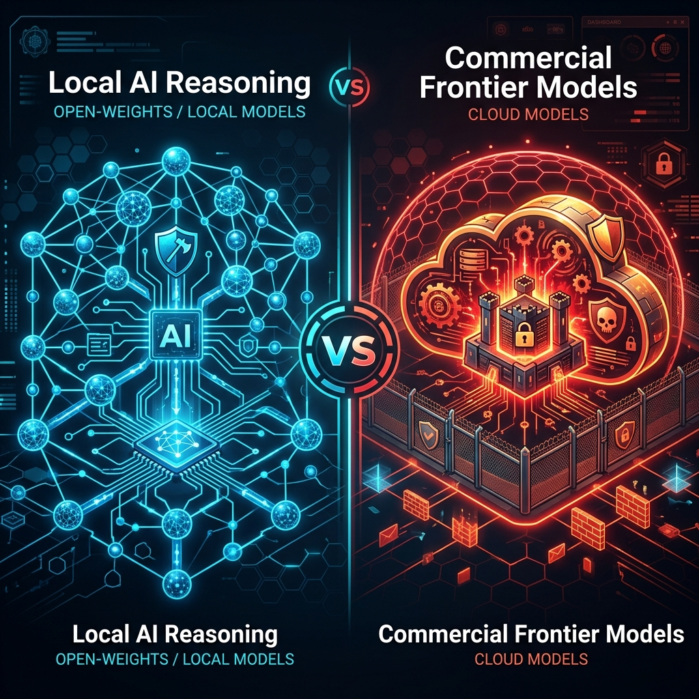

Reasoning Models vs. Frontier Models in Offensive Security Benchmarking

In offensive security, the race to build autonomous agents has triggered a significant debate: Should we rely on commercial frontier models (like OpenAI's o1/o3-mini or Anthropic's Claude 3.5 Sonnet), or should we pivot to self-hosted, local reasoning models (such as DeepSeek-R1, Qwen-2.5-Coder, or abliterated LLMs)?
Evaluating this is not just about raw coding capability; it requires looking at censorship, architectural integration, and how agent loops change the baseline of what is possible.
1. How Local Reasoning Models Hold Up Against Frontier Models
Historically, local open-weights models (like the early Llama 3 or Gemma 2 variants) were excellent at simple syntax-level tasks—such as drafting a basic exploit script or refactoring code—but they choked when faced with multi-step reasoning, pivoting across network topologies, or debugging an exploit payload when it triggered a web application firewall (WAF).
With the rise of distilled reasoning models (like DeepSeek-R1-Distill-Qwen-32B and DeepSeek-R1-Distill-Llama-70B), the dynamic has fundamentally changed:
- The "Frontier" Margin is Shrinking: Distilled reasoning models rival the logical capabilities of GPT-4o on raw code synthesis, reasoning steps, and mathematical deduction.
- The Refusal Bottleneck: The primary blocker for commercial frontier models in offensive security isn't intelligence; it's alignment. Commercial models are heavily filtered. When asked to evaluate an actual IDOR chain, interact with an exploit container, or compile a raw payload, they trigger safety refusals 90% of the time. This makes them highly impractical for automated red teaming.
- The Local Advantage: Uncensored, abliterated local models (such as
Gemma-4-26B-Abliteratedor custom quantized Qwen/DeepSeek weights) operate without filters. Because they don't refuse, they can objectively evaluate security weaknesses, think through payload debugging, and carry out execution loops without safety disruptions.
2. From Prompts to Agent Frameworks: The True Hacking Loop
Offensive operations are rarely static. A simple system prompt like "You are a red-team expert" will fail in a real scenario because hacking is a tight, stateful feedback loop:
$$\text{Action} \rightarrow \text{Observe Output} \rightarrow \text{Analyze Failure} \rightarrow \text{Refine Payload} \rightarrow \text{Repeat}$$
A raw model cannot interact with a terminal, manage state, or run network scans. This is where Agentic Orchestration becomes necessary. Inside an agent framework, the model acts as the brain, while the framework acts as its hands:
- Reasoning Step: The model analyzes a port scan inside its
<think>block and plans to test for SQL injection. - Action execution: The framework executes
sqlmapor a custom python harness against the target. - Feedback Parser: The framework captures stdout, parses database errors, and feeds the output back into the model's context window.
- Correction Step: The model recognizes a syntax error or firewall rule, adjusts the SQL query syntax, and triggers the next iteration.
By offloading execution mechanics to the framework and reasoning to the LLM, the model can iteratively work around technical barriers just like a human operator.
3. Leading Frameworks for Offensive Benchmarking & Execution
To evaluate how these models perform under fire, we use three primary benchmarking and emulation platforms:
A. Swarm-AI (Continuous Penetration Testing)
Swarm-AI is a distributed, agentic orchestration engine designed to scale offensive checks.
- Decoupled Architecture: It uses a central intelligence coordinator to distribute micro-tasks (OWASP tests, credential stuffing, etc.) to lightweight, ephemeral workers.
- Model Benchmarking: We can connect local reasoning models running via Ollama or vLLM to the Swarm-AI coordinator. This allows us to benchmark how efficiently different models choose, adapt, and run payloads for specific MITRE ATT&CK techniques or OWASP Top 10 vulnerabilities.
B. Hexstrike & Cyber Auto Agents
These agents focus on simulating human console interactions:
- Interactive Shell Access: They run loops where the agent interacts directly with terminal tools, Metasploit, or interactive debuggers.
- ReAct Flow: Ideal for measuring how well a model handles complex error logs, shell timeouts, and unexpected host behavior.
C. CALDERA / MITRE ATT&CK Benchmarks
For formal verification, running agents against mock targets controlled by MITRE CALDERA provides a strict, reproducible score. We evaluate how many adversary profile phases the agent successfully completes, giving a quantitative metric to compare models like DeepSeek-R1 against Claude 3.5 Sonnet.
What's Next?
In our upcoming labs, we are testing how well our local cluster setups handle autonomous loops. We will be analyzing how DeepSeek-R1:14B and Gemma-4-26B-Abliterated handle an interactive ReAct environment when tasked with finding and exploiting a vulnerability in a secure container.